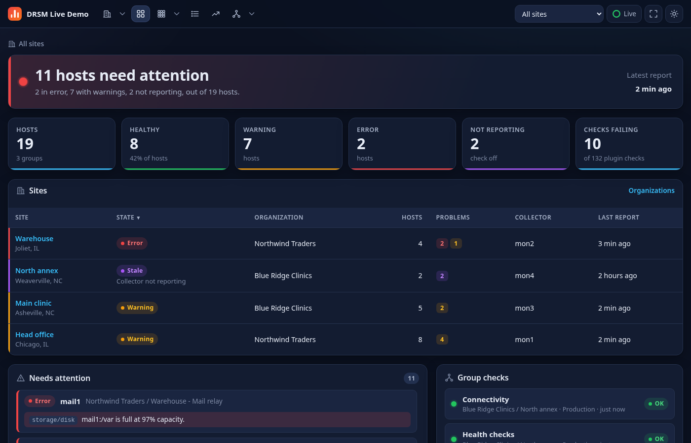
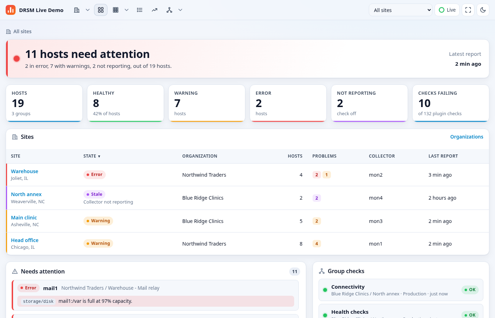
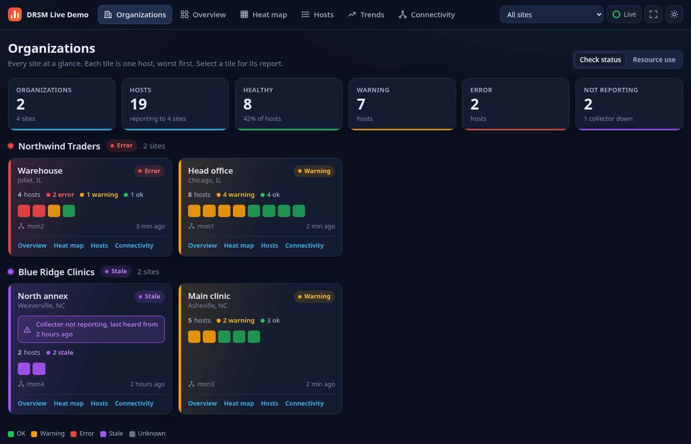
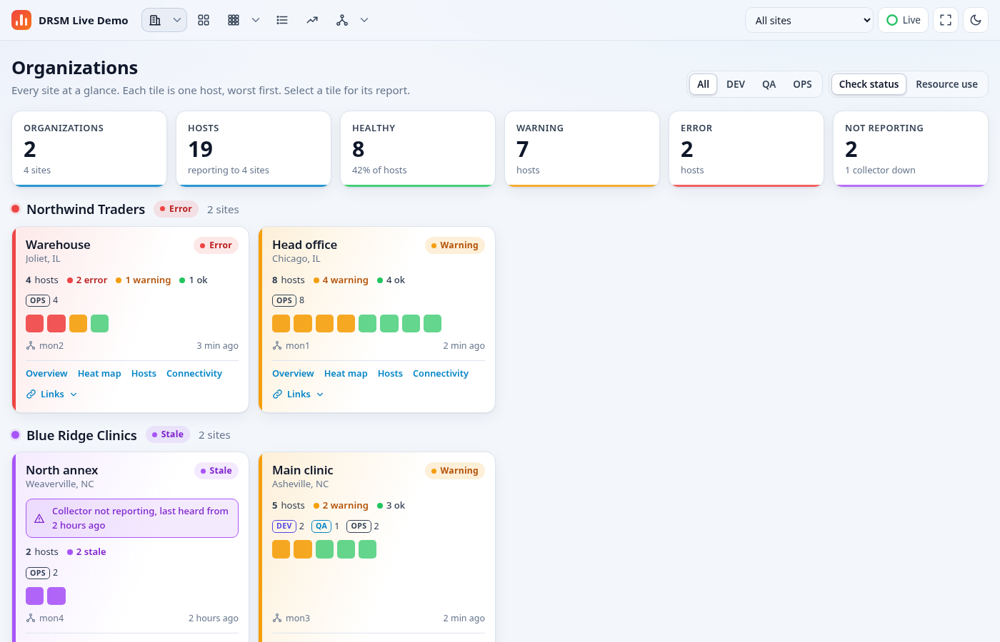
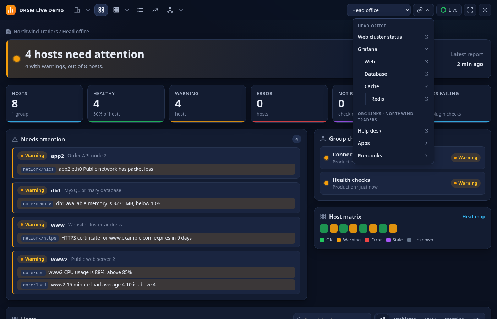
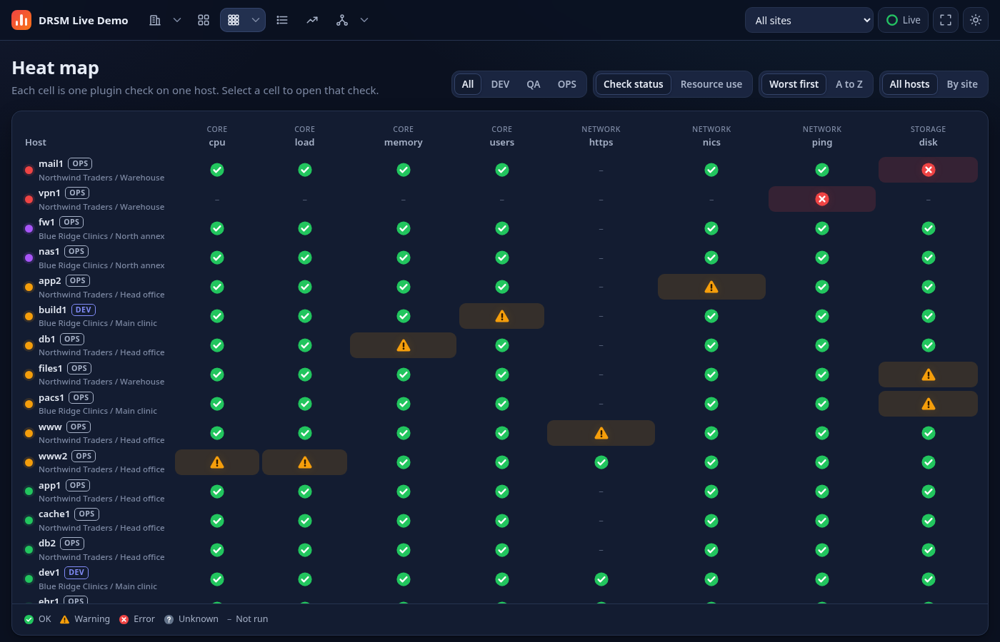
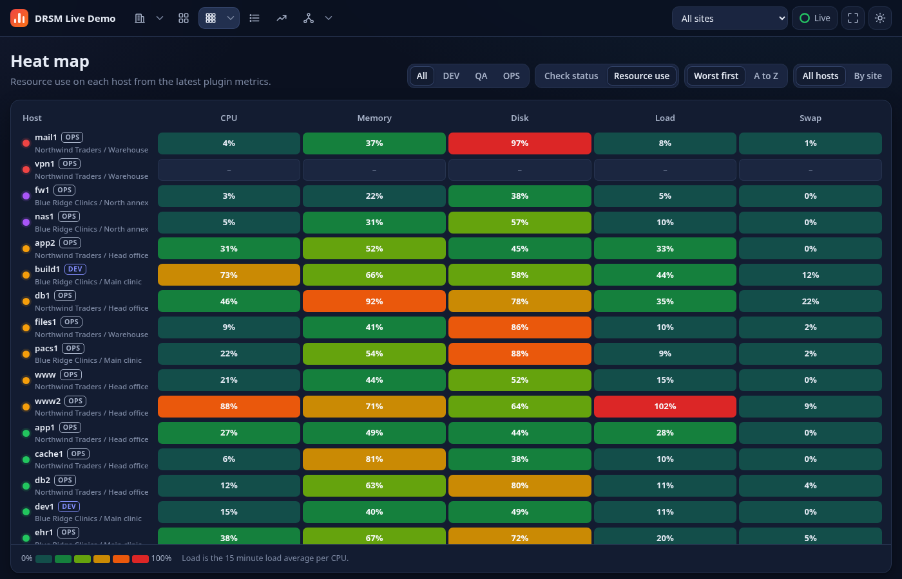
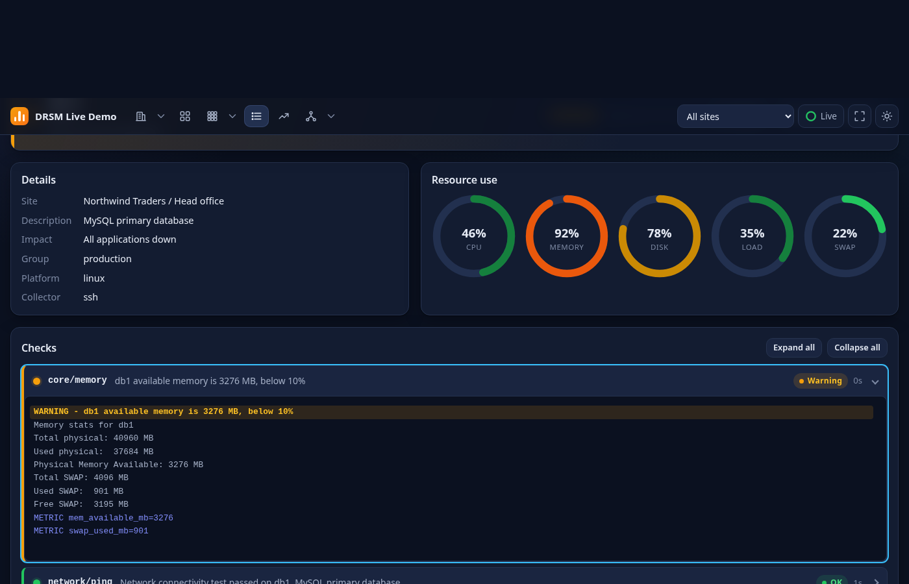
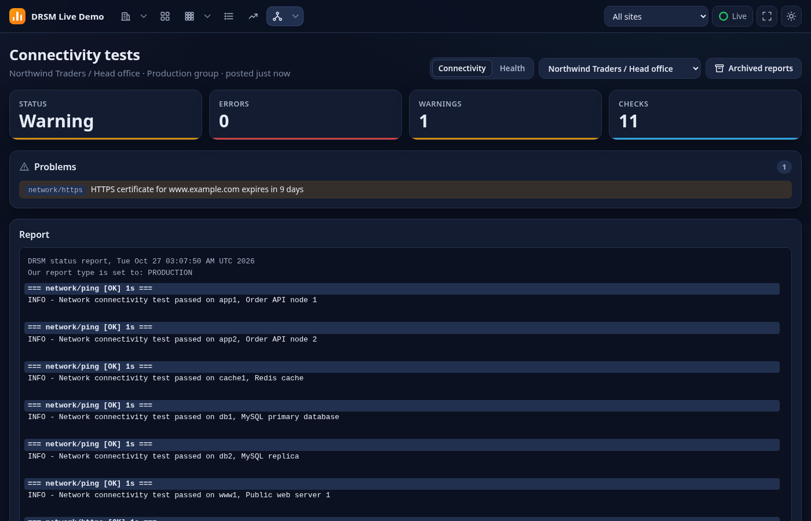
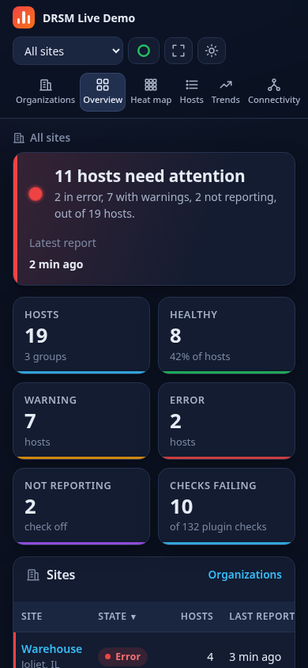

Web dashboard
The dashboard answers one question first: does anything need attention right now? Then it lets you drill from the whole estate down to one check on one host in two clicks.
It reads the report files that drsm_run.sh, system_report.sh and system_check.sh write, so it works with old and new setups. It needs PHP 7.2 or higher and loads no fonts or scripts from the internet. Try it in the live demo.
Overview
The Overview is the situational awareness page, built to read from across a room.
- Status banner: the overall state in one line, such as 8 hosts need attention, with the time of the latest report.
- Counters: hosts, healthy, warning, error, not reporting, and failing plugin checks.
- Needs attention: every current error and warning, worst first, each linked to the plugin that raised it.
- Group checks: the connectivity and health result for each host group.
- Host matrix: one colored square per host, for a quick scan.
- Host cards: CPU, memory and disk bars and the plugin states for every host, with search and filters by state and host group.


Organizations and sites
With hosts in more than one site, an Organizations page leads the menu. Each organization lists its sites, worst first. Each site card shows the worst state on a colored edge, host counts by state, a tile per host (select one for its report), and the monitor host that runs the site with the time it last reported. A site whose monitor host has stopped gets a Collector not reporting banner. Resource use colors each tile by the host's busiest resource instead.


The site picker in the top bar shows all sites, one organization or one site on every page. The Overview then lists the sites, Hosts adds Organization and Site columns, the heat map can group hosts By site, and Trends totals what each site has and needs. With a single site the pages look as before.
The tier filter (All, DEV, QA, OPS) on the Organizations, Heat map and Hosts pages shows one tier. It appears when the hosts have more than one tier and is remembered like the site picker. Site cards count each site's hosts by tier, the heat map and host table mark each host with its tier, and Organizations tiles name it in their tooltip.
The Site links menu in the top bar appears when the site picker shows one site that has links: the site's own, then its organization's under Org links, with a submenu for each level. Each site card on the Organizations page has the same menu. When the picker shows All sites or a whole organization, the top bar has an Org links menu instead, with a section for each organization shown that has org links. Links open in a new tab, and links for one tier show only with the tier filter on All or that tier. Organizations, Heat map and Connectivity in the main menu have a small arrow that opens their views: each organization, Check status, Resource use and By site, and the connectivity and health reports. The menus open with a click, a tap or the keyboard, and close with Escape.

To limit users to their own organizations or sites, list them in $AUTHscopes, see Login.
Heat map
The heat map puts every host against every check. Check status shows a status icon per plugin: a green check for OK, an amber triangle for a warning, a red cross for an error, and a gray question mark for unknown. Problem cells are shaded so they stand out. Select a cell to open that check in the host report. The bottom row shows the worst state in each column.

Resource use shows CPU, memory, disk, load per CPU and swap as a percentage, colored from teal through green, amber and orange to red, so the busiest hosts stand out before they alert. Sort Worst first or A to Z.

Hosts and host reports
The Hosts page is a table of every host, sortable by any column. Select a host for its report: details, gauges for CPU, memory, disk, load and swap, and a panel per plugin with the problems open first. Error and warning lines are highlighted, and Archived reports lists earlier runs.

Connectivity
The Connectivity page has the connectivity (probe) and health reports for each host group, the same reports that go out in the alert emails.

Trends and capacity planning
The Trends page answers two questions from the history of every report: how big does each host need to be, and what is normal for it. Pick a range of 7, 30 or 90 days, a year, or all of the history.
- Capacity by host compares every host: CPUs, memory and disk it has, what it needs, and whether it is oversized (it would fit in less than half), right-sized or undersized. Need keeps 30% free (
$TRENDheadroom): CPU at the 95th percentile of use, memory at the 99th percentile, and disk at today's use plus a year of the measured growth. - A host's page adds the average, 95th percentile and peak of each resource, disk growth per month and the date a disk reaches 90%, network traffic per 30 days, and disk IOPS and throughput.
- On an EC2 instance with the
cloud/awsplugin, AWS: what you pay for puts the instance type, EBS volumes, data transfer out, EBS I/O and public IPv4 address beside the measured need, and lists what DRSM cannot see: prices and Savings Plans, EBS volume types and provisioned IOPS, snapshots, and the internet share of the traffic. - Each chart shows the normal range as a band: the median for that hour of the day, plus or minus 3 robust standard deviations (
$TRENDsigma). Values outside it are marked and listed under Outside the normal range. Ranges start after a day of history and follow the hour of the day once there are 3 days.
The page reads reports/systems/<host>/metrics_history.tsv: bin/drsm_run.sh adds one line of metrics per report and keeps HISTORYdays days (730 by default). Reports themselves are purged after days, so after an upgrade run utils/drsm_metrics_backfill.sh once to start the history from the reports already archived and the offline archives. It is a dry run until --apply. Set $TRENDshared = array("host"); in config/drsm.php for shared hosting accounts, whose figures are the provider's whole server.
Clusters
The Clusters page shows the DataReel Cluster Manager (DRCM) clusters that the cluster/drcm plugin reports on. The menu item appears once a host runs the plugin, and the host cards of cluster nodes get a Cluster tag. Every node reports its own view, so a node that lost its link to the others shows up as a disagreement.
- A diagram of the nodes, colored Up or Down, with an arrow for the keep alives each node logs from each peer: green when answered, amber for recent missed keep alives, red when the link does not connect, the peer was down or this node isolated itself in the last 30 minutes. Select a node for its host report.
- The nodes and how each node sees them, and the resources with the node they run on. A resource running on its backup node is a warning, and one running on two nodes (a split cluster) is an error.
- The keep alive timeline for each link over the last 24 hours in 5 minute steps (
STRIP_HOURS,STRIP_STEP): answered, missed, peer down, this node isolated, or nothing logged. Hover a bar for its times. - Missed keep alives over 7, 30 or 90 days from the metrics history, red where a report saw a node down.
- The cluster events from each node's log (dropouts, recoveries, failovers, failbacks, isolation and resource script errors) and each node's full CM status report.
Vulnerabilities
The Vulnerabilities page shows the security advisories (Red Hat errata and their CVEs) that apply to the hosts that run the DataReel Reporting Agent for Linux, from each host's daily scan (turned on per host in the agent, [scan] enabled=1), read by the linux/vulnerabilities plugin. The menu item appears once a host runs the plugin.
- The fleet view lists each host with its Critical, Important, Moderate and Low advisory counts, its CVEs with no fix yet, its compliance score and when it was last scanned, then the advisories that affect the most hosts, worst first. Filter the advisories by severity. Each advisory links to its Red Hat errata page.
- A host view (select a host) lists its advisories with the packages to update, the CVEs Red Hat has no fix for yet (RHEL 10 CSAF/VEX scans), and the failed rules of a compliance scan.
- The OpenSCAP reports the agent uploads (RHEL 8 and 9 scans, and compliance scans) open from the host view on the dashboard that receives the uploads. Set
$LRAreportsDirthere to the report server'sreports_dir. The report is served with a sandbox Content-Security-Policy, so its scripts cannot reach the dashboard. A dashboard that only gets the DRSM reports, such as a hosted copy kept up to date bydrsm_web_sync.sh, shows the same advisories without these links.
Phones, tablets and wall screens
- Responsive: every page works on a phone, a tablet and a desktop.
- Light and dark: follows the device setting; the sun and moon button switches it.
- Live refresh: pages reload every
$REFRESHseconds(60 by default). The ring button shows the countdown and pauses it. A reload waits while you are typing in a search box, and keeps your scroll position. - Wall display: the expand button hides the controls for a NOC screen. Esc leaves it.
- Not reporting: a host whose report is older than
$STALEminutes(60 by default) is shown in purple, so a stopped cron or a dead monitor does not look like a healthy estate. - Any URL path: serve it from
/sysadmin,/drsm/dashboardor anywhere else.

Customizing the dashboard
Add settings to $CONFIGdir/drsm.php:
$SITEtitle = 'MY System Monitor'; // Name in the top bar
$REFRESHseconds = 60; // Auto refresh, 0 turns it off
$STALEminutes = 60; // Report age that counts as not reporting, 0 turns it off
$SITElogo = '/images/logo.png'; // Logo before the name in the top bar
$METRICSskip = array("windows"); // No gauges or trends for these platforms or groups
$NAVhome = array("label" => "Status", "url" => "/dashboard/status.php", "icon" => "check");
$NAVurl = array("hosts" => "/dashboard/myhosts.php"); // built in item to your page
$NAVsub = array("heatmap" => array(array("Wall", "/dashboard/wall.php")));
$SITEfooter = 'Example Ops Monitor'; // footer name
$SITEhelp = ''; // footer Help link: unset = built in Users and Admin guides, '' = none
$HELPadmin = false; // hide the Admin guide tab on the Help page
$DOCSurl = 'https://datareel.com/drsm/docs/'; // where the Admin guide's doc links go
$LRAreportsDir = '/var/www/html/linux/reports'; // Linux agent reports_dir, for the OpenSCAP report links
$NAVextra = array( // Your own top bar menu items
array("label" => "Classic view", "url" => "/classic/", "icon" => "layout"),
array("label" => "Tools", "url" => "/tools/",
"sub" => array(array("Time converter", "/tools/utc.php"))));A single-site install shows a Site links menu when etc/sites/default/default.site has LINK= lines, the same lines as a site file in a multi-site setup. bin/drsm_run.sh writes them to $REPORTdir/site.json.
Status messages
Post a notice for everyone, such as a planned outage or a known problem, and it scrolls across the top of every page, in large type in wall display mode. Critical messages come first; --pin keeps one in view instead of scrolling. Each message links to a details page, or to the list of messages (php/messages.php). Ended messages drop off by themselves.
$ ~/drsm/utils/drsm_message.sh add critical "Core switch down, network team on site" --pin
$ ~/drsm/utils/drsm_message.sh --apply add info "Patching tonight 22:00 to 02:00" \
--link https://wiki.example.com/patching --until "2026-11-02 02:00"
$ ~/drsm/utils/drsm_message.sh list
$ ~/drsm/utils/drsm_message.sh --apply remove 1
$ ~/drsm/utils/drsm_message.sh --apply clean # drop ended messagesWithout --apply the script shows the change and saves nothing. The messages are lines in $CONFIGdir/messages.conf (or $MESSAGESfile): level | message | link | until | options.
Reports from your own scripts
Backup, patching, certificate, SNMP and other checks that write a text file can show on the dashboard with a state. List them in a file and set $EXTreports to its path. They get a menu item, a page with a section for each [id] Title line, and a panel on the Overview.
$EXTreports = '/var/www/html/dashboard/config/ext_reports.conf';
$EXTtitle = 'Site reports'; // Menu and page name, default Other reports
# Title | report file | link | max age minutes | status file
[backups] Backups and patching
PROD backups | /var/www/html/sysadmin/backup/prod_summary.txt | | 1440
SSL certificates | /var/www/html/sysadmin/ssl/all_certs.txt | | 1440 | /var/www/html/sysadmin/ssl/errors.txt
[consoles] Consoles
Storage console | - | https://storage.example.com/A report is Error when its file is missing or a line has ERROR or FAILED, Warning when a line has WARNING, and Stale when it is older than the max age (from its ETIME: line, else the file time). An empty link shows the file inside the dashboard; - as the file makes a plain link with no state, and - as the status file shows the report with no state. Only files listed there can be shown.
For colors and styles, edit $WWWdir/site/custom.css, which loads after the DRSM styles. Colors are CSS variables:
:root { --accent: #e11d48; }To replace the header and footer, add page_header.php and page_footer.php to $WWWdir/site. The header must print drsm_head_assets() to keep the styles and scripts, and leave <main> open:
<!DOCTYPE html>
<html lang="en">
<head>
<meta charset="utf-8">
<meta name="viewport" content="width=device-width, initial-scale=1">
<title>MY System Monitor</title>
<?php echo drsm_head_assets(); ?>
</head>
<body data-refresh="<?php echo (int)$REFRESHseconds; ?>">
<main class="page">A page_header.php from a release before the redesign still works, but the pages are unstyled until it prints drsm_head_assets().
Updates and reinstalls never overwrite $WWWdir/index.php or anything in $WWWdir/site.
Web only package
utils/make_web_demo.sh builds a copy of the dashboard for a host with nothing but Apache and PHP, such as a HostGator or other cPanel account. It finds its own files, so no server paths need to be set.
| Option | Meaning |
|---|---|
-p /url/path | URL path it is served from, default /drsm/dashboard |
-o outdir | Output directory, default ./drsm_web |
-t title | Name in the top bar |
-s | Add sample reports for made up hosts, for a public demo |
-a | Turn on the login and block direct access to the report folder |
It writes <outdir>/dashboard/ and <outdir>/drsm_dashboard.zip. How to upload it and keep its reports up to date is in Workstation with a hosted dashboard.
Login from outside your network
The dashboard can ask for a user name and password from anyone outside your own networks, while people on the internal network get straight in. It is off by default, so a public demo stays open, and it is plain PHP, so it works on shared hosting.
- Make a password hash for each account. Run this on any machine with PHP; it asks for the password without showing it:
$ php ~/drsm/utils/drsm_password.php admin - Add the settings to
config/drsm.php, with the printed line in$AUTHusers:$AUTHenable = 1; $AUTHnetworks = array('127.0.0.1/32', '::1/128', '10.0.0.0/8', '172.16.0.0/12', '192.168.0.0/16'); $AUTHusers = array( 'admin' => '$2y$10$...', ); - Block direct access to the
reportsfolder, which the login can not cover because it is served as plain files.make_web_demo.sh -adoes this; otherwise putRequire all deniedinreports/.htaccess. With login on, the Archived reports buttons read reports through the pages.
| Setting | Meaning |
|---|---|
$AUTHnetworks | Internal networks as CIDRs, IPv4 or IPv6, that need no login |
$AUTHproxies | Reverse proxies or CDNs in front of the site, such as Cloudflare. X-Forwarded-For is only read from these. Leave empty on a plain cPanel account |
$AUTHhttps | 1 (default) refuses logins over plain HTTP |
$AUTHidleminutes, $AUTHmaxhours | Sign out after 60 minutes idle, or 12 hours after login |
$AUTHmaxfails, $AUTHlockminutes | Lock an address out for 15 minutes after 5 failed logins |
$AUTHstatedir | Failed login counts, default config/auth, must be writable by the Web server |
$AUTHscopes | Organizations and sites each user may see, for example 'tech' => array('acme/hq', 'beta'), with '*' for all. Unset, every user sees every site. Set, a user not listed sees nothing |
$AUTHnetworkscopes | The same for visitors from $AUTHnetworks, by address: '10.1.0.0/16' => array('acme/hq') |
Passwords are stored as bcrypt hashes. Sessions use HttpOnly, SameSite cookies, Secure on HTTPS, with a new session id at login, and the login and sign out forms carry a CSRF token.
Security
- Report text is escaped and printed as text, never run or rendered as HTML, so output from a monitored host cannot inject code into the page.
- Host names in URLs are checked, so
../paths are refused. - The Web only package blocks direct downloads of
status.json. - Reports still contain process lists and user names: turn on the login or put the dashboard behind a firewall, as in Web server.